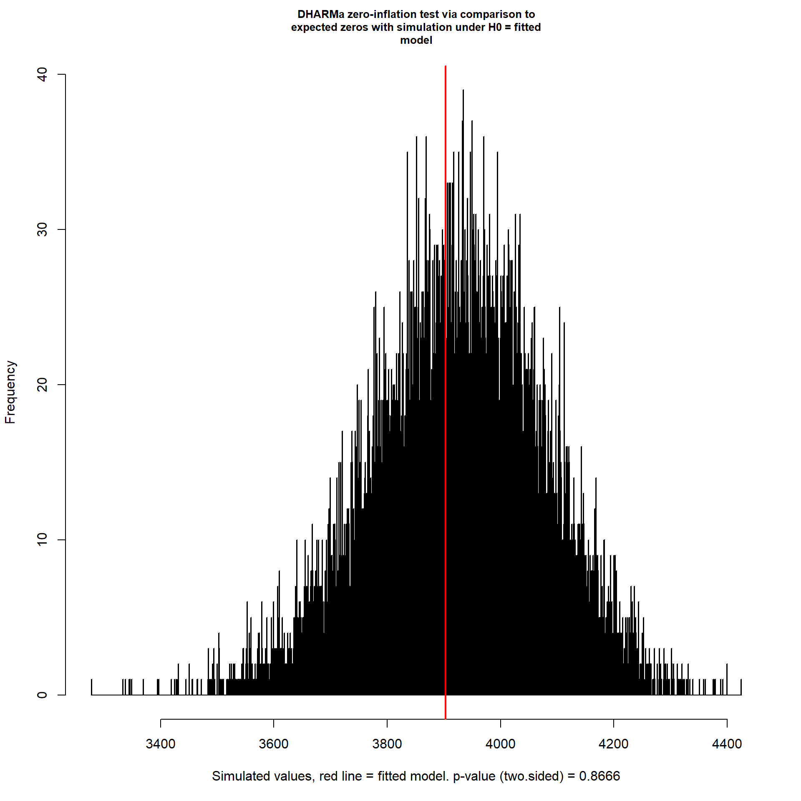
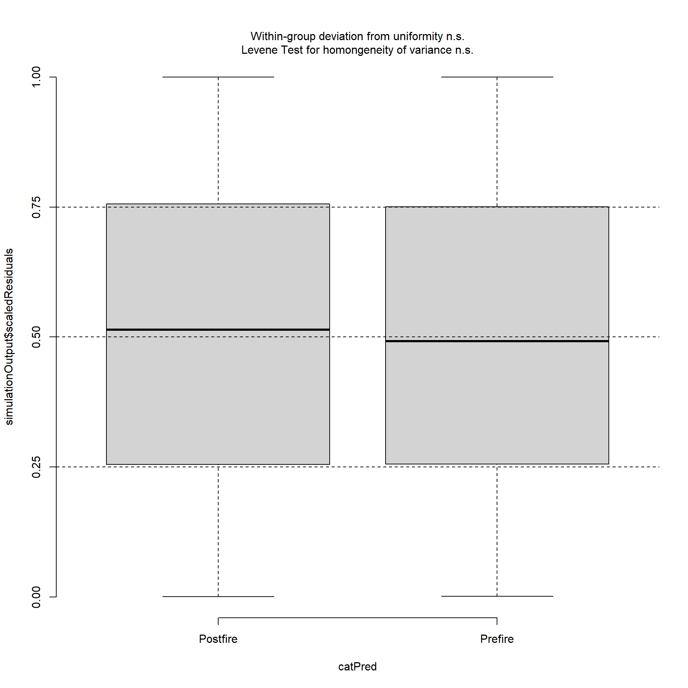
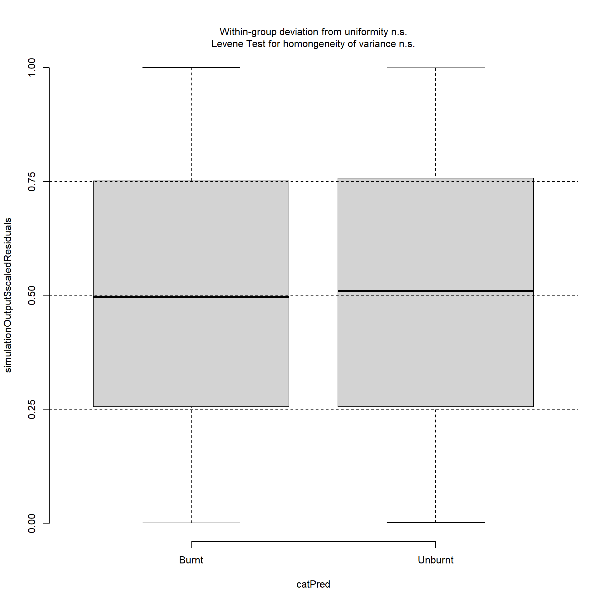
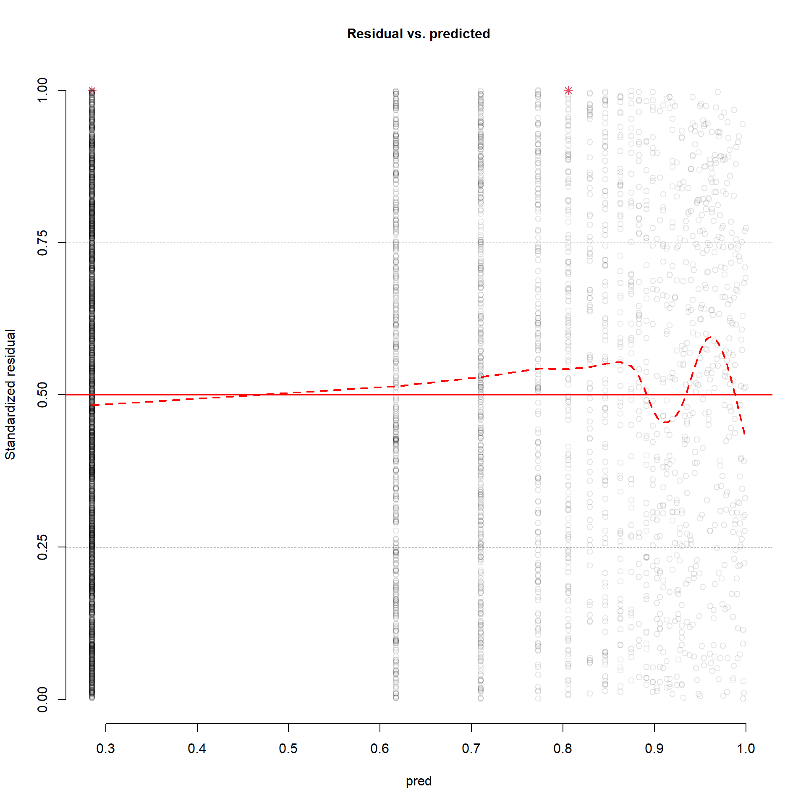

7 - Model Diagnostics
DHARMa Residual Package
In order to validate my fitted model I needed to conduct diagnostic tests on the model residuals as suggested in step 7 Validate the Model by (Zuur and Ieno 2016). It is common practice to use Pearson and deviance residuals when evaluating various regression methods. However, these residuals are not recommended in non-normally distributed model validation because they may not follow a normal distribution making the resulting plots difficult to interpret and possibly incorrect (Dunn and Smyth 1996; Feng, Li, and Sadeghpour 2020; Bai et al. 2021). It is suggested that the most efficient and reliable method for model validation is using randomized quantile residuals (RQR) which will follow a normal distribution when applied to a correct count regression model (Dunn and Smyth 1996; Feng, Li, and Sadeghpour 2020). RQRs are also recommended when modelling non-normal discrete response variables (Sadeghpour, 2016). I used the R package DHARMa (Hartig 2022) to calculate and plot RQRs for my final selected models. The DHARMa package simulates new response data from our fitted models and calculates scaled RQRs using this simulated data (Hartig 2022).
Preparing the Data
library(glmmTMB)
library(lme4)
library(DHARMa)
library(ggplot2)
library(performance)
library(see)
library(patchwork)
library(MASS)
library(lmtest)
library(car)
library(ggeffects)
library(effects)
library(coefplot)
#Reading in the Final Clean Data from cleaning script 7
Bear<-read.csv("./Data/7_BlackAdultClean.csv",header=TRUE,stringsAsFactors = FALSE)
#Creating final model. Model selection found in script 1_AdultBlackBearModelFit
FinalModel<-glmmTMB(Lone_Adult ~ Region + Season + Status + Number_of_Groups + Number_of_Groups*Season + Season*Status + Season*Region + Region*Status + Season*Region*Status +
offset(log(Effort_per_week)) + (1|Camera_Code),
data = Bear,
ziformula = ~Season,
na.action = na.pass,
family = nbinom1(link = "log"))Outliers and Normality
In order to evaluate for outliers or deviation from normality in the residuals I plotted the residuals in a QQ plot, residual plot, and outlier plot.
QQ and Residual Plot
If there are no observable issues then in the QQ plot (left) we expect to see the residuals fall along the red diagonal line. If the points deviate from this than we can infer that there may be over/under dispersion or non-normal patterns in the residuals. On the residual plot (right) we are looking for the red line to be around the 0.5 mark and no observable pattern to the residuals.
#Creating the simulated residuals from the final fitted model.
SimulationOutput1<-simulateResiduals(fittedModel = FinalModel,n = 10000)plot(SimulationOutput1)Interpretation and Action
It appears that there are no significant issues with the residuals of this fitted model. Looking at the QQ plot there are no signs of over-dispersion or under-dispersion or issues regarding normality. The residual plot does not reveal a pattern in the RQR residuals and in fact the residuals seem to lie quite well along the 0.50 mark. No action is required.
Outlier Plot and Test
This outlier plot and test is being conducted to further confirm the absence of outlying residuals. If there are no observable issues with the residuals than we would except to see a very small number of outliers in the histogram (red bar). There will be some number of outliers however due to the numerous simulations and bootstrapping. This outlier test is being conducted with a bootstrap method and a bootstrap value of 1000 (Hartig, n.d.).
testOutliers(SimulationOutput1, type = "bootstrap",nBoot = 1000)Testing for Over and Under Dispersion
In order to confirm that there is not either under or over dispersion in the residuals I created a histogram which illustrates the frequency of dispersion across the numerous DHARMa simulations. We expect the red vertical line on the plot to occur somewhere in the middle of the histogram. If the red line occurred at the extreme of either end of the distribution we would expect an issue with over/under dispersion in the model.
testDispersion(SimulationOutput1)Zero-Inflation Test
In order to confirm that there is not zero-inflation in the residuals I created a histogram which illustrates the frequency of the number of zeros occurring across the numerous DHARMa simulations. We expect the red vertical line on the plot to occur somewhere in the middle of the histogram. If the red line occurred at the extreme of either end of the distribution we would expect an issue with zero-inflation in the model.
testZeroInflation(SimulationOutput1)
Testing Within Group Uniformity and Between Group Homogeneity
In order to test whether there are violations of within group uniformity or between group homogeneity residuals were plotted by each categorical predictor. If we see a violation in either assumption the box-whisker plot will become red. I also plotted the continous predictors and if there was an issue in these plots we would see patterns within the residual plots.
testCategorical(SimulationOutput1,catPred = Bear$Season)testCategorical(SimulationOutput1,catPred = Bear$Status)
testCategorical(SimulationOutput1,catPred = Bear$Region)
GroupsResidualPlot<-plotResiduals(SimulationOutput1,Bear$Number_of_Groups)
SizeResidualPlot<-plotResiduals(SimulationOutput1,Bear$Group_Size)